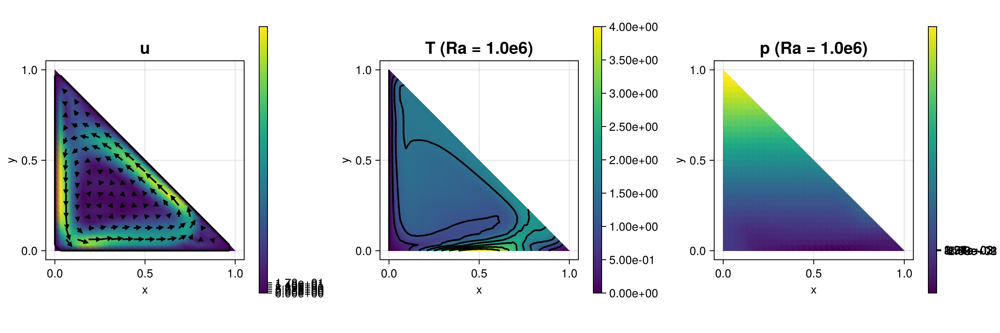

270 : Natural convection
Seek velocity $\mathbf{u}$, pressure $p$ and temperature $\theta$ such that
\[\begin{aligned} - \mu \Delta u + (\mathbf{u} \cdot \nabla) \mathbf{u} + \nabla p & = Ra \, \theta \, g \\ - \Delta \theta + \mathbf{u} \cdot \nabla \theta & = 0 \end{aligned}\]
on a given domain $\Omega$ (here a triangle) and boundary conditions
\[\begin{aligned} \mathbf{u} & = 0 && \quad \text{along } \partial \Omega\\ T & = T_\text{bottom} &&\quad \text{along } y = 0\\ T & = 0 &&\quad \text{along } x = 0 \end{aligned}\]
The weak formulation seeks $(\mathbf{u},p,\theta) \in V \times Q \times X \subseteq H^1_0(\Omega)^2 \times L^2_0(\Omega) \times H^1_D(\Omega)$ such that
\[\begin{aligned} (\mu \nabla \mathbf{u}, \nabla \mathbf{v}) + ((\mathbf{u} \cdot \nabla) \mathbf{u}, \mathbf{v}) - (\mathrm{div} \mathbf{v}, p) & = (\mathbf{v}, Ra g \, \theta) && \quad \text{for all } \mathbf{v} \in V,\\ (\mathrm{div} \mathbf{u}, q) & = 0 && \quad \text{for all } q \in Q,\\ (\nabla \theta, \nabla \varphi) + (u \cdot \nabla \theta, \varphi) & = 0 && \quad \text{for all } \varphi \in X. \end{aligned}\]
To render the discrete method pressure-robust, a reconstruction operator is applied to all identity evaluations of $\mathbf{u}$ and $\mathbf{v}$ (when the switch reconstruct is set to true). Further explanations and discussion on this example can be found in the reference below.
"On the divergence constraint in mixed finite element methods for incompressible flows",
V. John, A. Linke, C. Merdon, M. Neilan and L. Rebholz,
SIAM Review 59(3) (2017),
>Journal-Link< >Preprint-Link<
The computed solution for the default parameters looks like this:

module Example270_NaturalConvectionProblem
using ExtendableFEM
using ExtendableGrids
using GridVisualize
using LinearAlgebra
function kernel_nonlinear!(result, u_ops, qpinfo)
u, ∇u, p, ∇T, T = view(u_ops, 1:2), view(u_ops, 3:6), view(u_ops, 7), view(u_ops, 8:9), view(u_ops, 10)
Ra, μ, ϵ = qpinfo.params[1], qpinfo.params[2], qpinfo.params[3]
result[1] = dot(u, view(∇u, 1:2))
result[2] = dot(u, view(∇u, 3:4)) - Ra * T[1]
result[3] = μ * ∇u[1] - p[1]
result[4] = μ * ∇u[2]
result[5] = μ * ∇u[3]
result[6] = μ * ∇u[4] - p[1]
result[7] = -(∇u[1] + ∇u[4])
result[8] = ϵ * ∇T[1]
result[9] = ϵ * ∇T[2]
result[10] = dot(u, ∇T)
return nothing
end
function T_bottom!(result, qpinfo)
x = qpinfo.x
result[1] = 2 * (1 - cos(2 * π * x[1]))
return nothing
end
function main(;
nrefs = 5,
μ = 1.0,
ϵ = 1.0,
Ra_final = 1.0e6,
reconstruct = true,
Plotter = nothing,
kwargs...
)
# problem description
PD = ProblemDescription()
u = Unknown("u"; name = "velocity")
p = Unknown("p"; name = "pressure")
T = Unknown("T"; name = "temperature")
assign_unknown!(PD, u)
assign_unknown!(PD, p)
assign_unknown!(PD, T)
id_u = reconstruct ? apply(u, Reconstruct{HDIVBDM1{2}, Identity}) : id(u)
assign_operator!(PD, NonlinearOperator(kernel_nonlinear!, [id_u, grad(u), id(p), grad(T), id(T)]; kwargs...))
assign_operator!(PD, HomogeneousBoundaryData(u; regions = 1:3))
assign_operator!(PD, FixDofs(p; dofs = [1], vals = [0]))
assign_operator!(PD, HomogeneousBoundaryData(T; regions = 3))
assign_operator!(PD, InterpolateBoundaryData(T, T_bottom!; regions = 1))
# grid
xgrid = uniform_refine(reference_domain(Triangle2D), nrefs)
# FESpaces
FES = Dict(
u => FESpace{H1BR{2}}(xgrid),
p => FESpace{L2P0{1}}(xgrid),
T => FESpace{H1P1{1}}(xgrid)
)
# prepare plots
plt = GridVisualizer(; Plotter = Plotter, layout = (1, 3), clear = true, size = (1200, 400))
# solve by Ra embedding
params = Array{Float64, 1}([min(Ra_final, 4000), μ, ϵ])
sol = nothing
SC = nothing
step = 0
while (true)
# solve (params are given to all operators)
sol, SC = ExtendableFEM.solve(PD, FES, SC; init = sol, return_config = true, target_residual = 1.0e-6, params = params, kwargs...)
# plot
scalarplot!(plt[1, 1], id(u), sol; levels = 0, colorbarticks = 7, abs = true)
vectorplot!(plt[1, 1], id(u), sol; clear = false, title = "|u| + quiver (Ra = $(params[1]))")
scalarplot!(plt[1, 2], id(T), sol; title = "T (Ra = $(params[1]))")
scalarplot!(plt[1, 3], id(p), sol; title = "p (Ra = $(params[1]))")
# stop if Ra_final is reached
if params[1] >= Ra_final
break
end
# increase Ra
params[1] = min(Ra_final, params[1] * 3)
step += 1
@info "Step $step : solving for Ra=$(params[1])"
end
# compute Nusselt number along bottom (= boundary region 1)
∇T_faces = FaceInterpolator([jump(grad(T))]; order = 0, kwargs...)
NuIntegrator = ItemIntegrator((result, input, qpinfo) -> (result[1] = -input[2]), [id(1)]; entities = ON_FACES, regions = [1])
Nu = sum(evaluate(NuIntegrator, evaluate!(∇T_faces, sol)))
@info "Nu = $Nu"
return Nu, plt
end
end # moduleThis page was generated using Literate.jl.